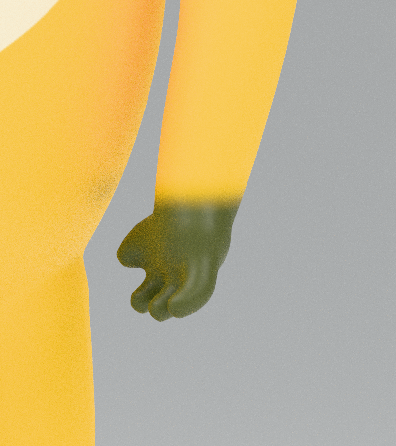

奶蛙 · 桌面互动预览
这里使用与 DIY-Cat 相同的 3D 引擎。移动鼠标观察眼睛和头部跟随，在输入框打字，或点击桌面上的饮料。
正在加载模型…
移动鼠标：眼睛先看，头部随后转向。轻划头部可抚摸；点击饮料可使用。按住 Shift 拖动可旋转视角。
只在输入框和互动区域获得焦点时响应键盘；打盹时输入会将奶蛙吵醒。预览默认静音。
正在读取骨架与动作…
奶蛙以坐姿呼吸和打盹为基础，手臂实时对准按键、鼠标与道具。招手、揉脸和打滚使用桌宠共享的动作控制。下载 GLB 或模型包后，可在模型库导入；下方历史渲染仅展示建模细节，互动效果以上方预览为准。
查看手部与动作渲染
真实模型渲染，便于对照上方可交互预览。


展开原始设计图